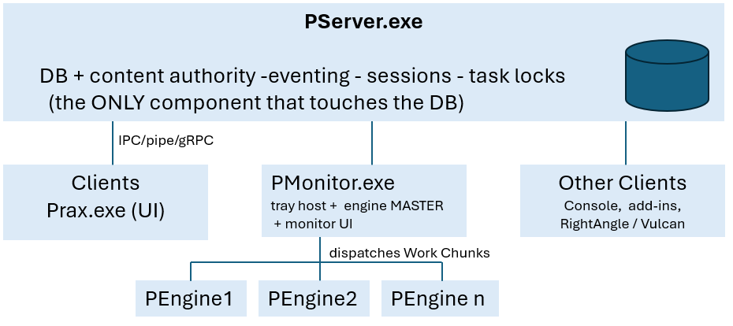

Architecture
Overview
The runtime follows two guiding principles:
-
Database-as-server. Clients never open the database directly; every read/write and content (file) operation is marshalled to PServer.
-
Pull workflow. Heavy CAM work (import, tooling, nesting) is never done in the client. A client records an item and sets its state; background engine workers pull
ReadyTo*work and process it, advancing the state as they go.

| Process | Project / assembly | Role |
|---|---|---|
|
|
Database & content server; Windows service |
|
|
Background CAM worker (master + agents) |
|
|
Tray host; runs the engine master + monitoring UI |
|
|
Main desktop client |
|
|
CLI / dev-utility client |
PServer — the database & content server
PServer is the single authority for all persisted state.
-
Runs as a Windows service when non-interactive or as an interactive console with maintenance commands
-
The only component that touches the database
-
Serves clients over a duplex channel
-
Eventing hub:
FireEventbroadcasts to subscribed clients. -
Task concurrency:
AcquireTaskLock/CheckTaskLockso two engines can never process (e.g. nest) the same job. -
Sessions, licensing, and users.
PEngine — the CAM worker (master + agents)
One executable, two roles.
Agent worker
Launched as PEngine.exe agentid=N.
-
Stands up a single STA worker thread with a scheduler (
STAScheduler). -
AgentService.LibInit()runsPX.Init+PEngine.Login+FX.InitThis is why CAM work lives here: nesting needs Flux’s message pump/runtime, which a bare host does not have. -
AgentService.Perform(WorkChunk)
Import |
PEngine.ImportPart |
|---|---|
|
|
|
|
|
|
|
|
Master (dispatcher)
-
Parses
agents=N chunks=M. -
Server.Init()— subscribes toTaskSubmittedand starts a heartbeat that writesPXAgentBeatevery few seconds so other processes know the engines are alive. -
Loops in
Process():-
queries the DB for
ReadyToImport/ReadyToBend/ReadyToCutparts and the nest queue, -
chunks them into
WorkChunks (SubmitWork), -
DispatchWorksassigns each chunk to a free agent viaAgent.Get(i).Do(work)(synchronous IPC), launchingPEngine.exe agentid=ion demand (Agent.AgentApp = PEngine.exe).
-
PMonitor — tray host, engine master & orchestration
monitoring UI in Monitor/AgentMonitor.cs; client-side helpers. The always-on system-tray app (single instance).
-
Hosts the engine master in-process. the dispatcher shows the pending-work queue and a live per-agent activity graph, and manages the agent pool.
-
Gated by mode/license:
CanRunEngine = SyncMode == 0 && Lic.Engine. It can instead run as a -
Also handles part drop-folder watching, config sync, and toast notifications.
-
Clients start/stop/reach it through
PMonitor.Start/Stop/Login
| In practice PMonitor is the process that keeps the PEngine worker pool alive and fed, and provides the tray queue/heartbeat UI. |
Clients
Any process that connects to PServer for data and issues work. Clients do not perform CAM; they create/modify data through PServer and set an item’s state, then the engines pick it up.
-
Prax.exe— the main WPF desktop app (jobs, parts, layouts, planning). Launches PMonitor if needed. -
Prax.Console.exe— CLI / dev utility
How they cooperate — the pull workflow
-
A client uploads a part / creates a job → PServer writes it with
StateID = ReadyToImportand fires an event. -
The engine master (in PMonitor) sees pending
ReadyTo*work, chunks it, and dispatches to a free PEngine agent. -
The agent imports → bend-tools → cut-tools → nests using Flux, writes results back through PServer, and advances the state (
ReadyToBend→ReadyToCut→ … ; layouts toReviewLayout/LayoutOK, etc.). -
PServer fires
StateChanged; clients subscribed viaDBEvents.Watchrefresh their views.PXAgentBeatsignals engine health; task locks stop two agents grabbing the same nest.